66 Days
Designing a low-friction budgeting app that turns finance tracking into a 66-day habit journey for Singaporean students.
The Problem
Many Singaporean students struggle to build consistent budgeting habits due to tedious manual logging and irregular spending patterns. Most give up within the first 1–2 weeks — not from lack of intent, but too much friction.
The Solution
A low-friction budgeting app that turns financial tracking into a 66-day habit journey — the psychological threshold for a new behaviour to become automatic. Three core ideas reduce drop-off:
- 66-Day Habit Tracker — a compact progress bar showing "XX/66 days" that makes the goal concrete and near.
- QR Receipt Sharing — after a PayNow / PayLah payment, tap "Share with 66 Days" to auto-log the expense in the background.
- Fun Budget — a per-entry toggle that marks any spending as guilt-free social spending, so students never feel punished for enjoying university life.
Understanding Our Users
Primary Users
Students new to budgeting, and students who previously tried and gave up within the first 1–2 weeks, overspending past their budget.
Top Needs
Simple, low-effort logging. A guilt-free way to spend socially. A clear sense of progress without overwhelming features.
"I want to make new friends and learn to be more responsible."
Matthew is a sociable business student living in NTU hall. He values social connection — meals out, dance activities, gaming with friends — but is new to managing his own finances. He pays via PayNow but regularly forgets to log expenses, and occasional splurges spiral into guilt that causes him to abandon tracking entirely.
- Manual logging feels tedious, especially when rushing between classes or socialising.
- Small purchases — snacks, drinks — often go untracked because they seem too minor.
- Occasional splurges trigger guilt and cause him to abandon the app altogether.
- Most budgeting apps have too many features, adding cognitive load instead of reducing it.
Fun Budget & Habit Tracker
It's midnight. Before joining friends at Hai Di Lao, Matthew checks his Fun Budget. The tracker shows Day 11/66 — still on track for the PC component he's been saving for. He decides to skip supper tonight.
Logging Income
Matthew gets paid for a weekend event job. He opens 66 Days, taps the freelance category on the home page, logs $100, and feels satisfied watching his income balance grow.
QR Code to App Sharing
After paying at the canteen via PayNow, Matthew taps "Share with 66 Days". The app logs the expense automatically. He opens the app later to review and approve the pending QR-linked transaction.
Problem Framing
Our original design included gamification, streaks, and a social feature. User testing and presentation feedback revealed three gaps in our concept.
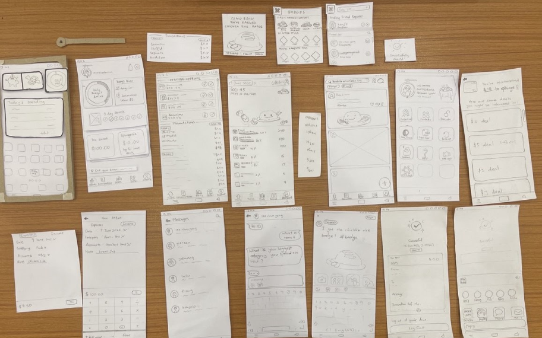
Lo-fi paper prototype used for heuristic evaluation
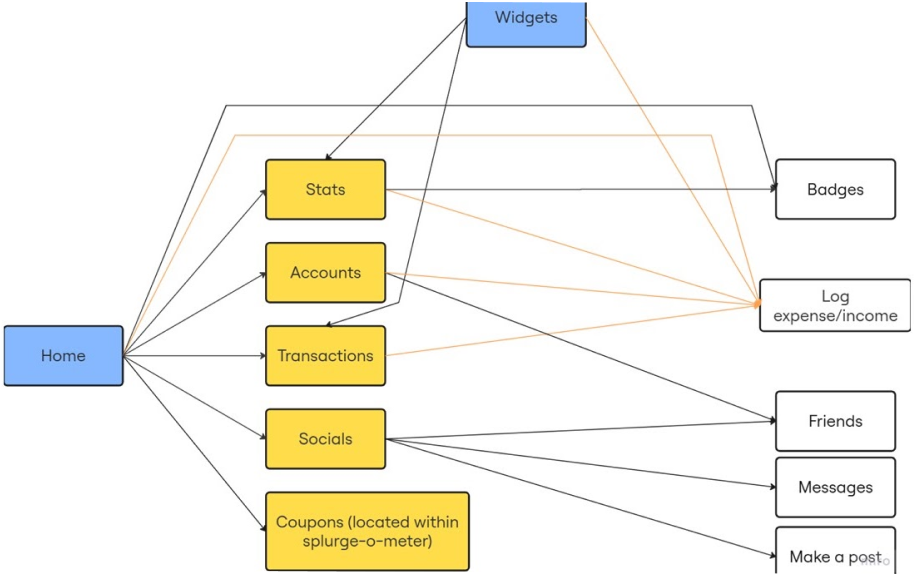
Initial navigation diagram
Overcomplicated
The app was too complex to explain quickly. First-week users felt overwhelmed by the number of screens and features.
Wrong Drop-off Fix
Features addressed retention, but not the real drop-off point: initial habit formation in weeks one through three.
Wrong Motivation
Users weren't motivated by streaks or badges. What worked was ease and a guilt-free way to handle flexible spending.
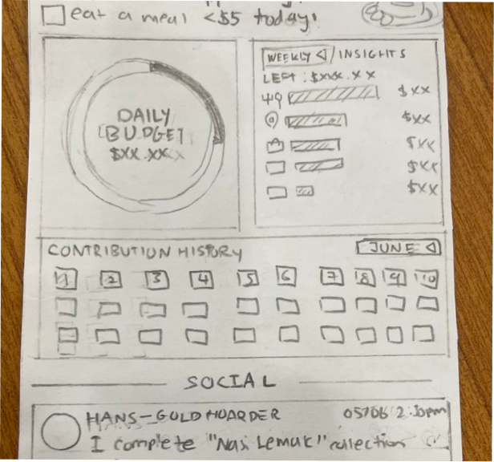
Home page
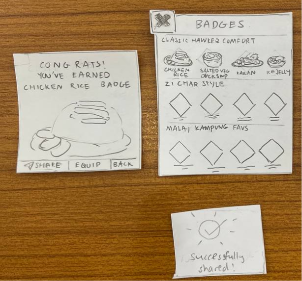
Gamification through badges
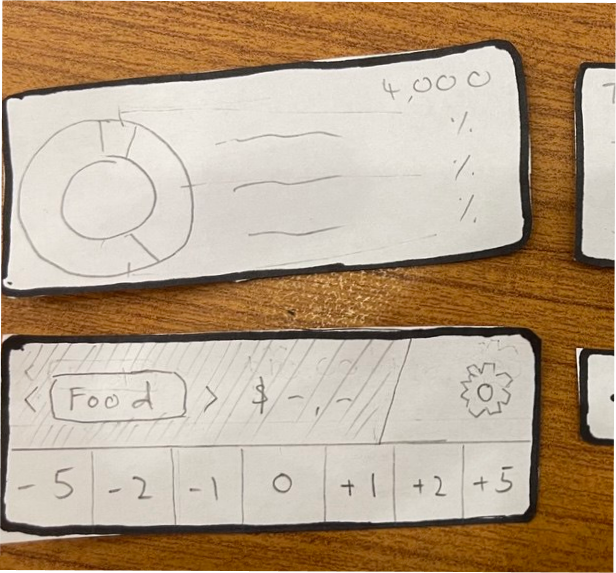
Testing different widgets
"How might we help new users build consistent budgeting habits — especially in the first 2–3 weeks, where most drop off?"
Final problem statement — reframed after heuristic evaluation and user testing
What We Kept — and Why
- Fun Budget (formerly Splurge Meter) — converted from a locked category to a per-entry toggle. Any expense in any category can be tagged as Fun Budget, with a lively meter that makes flexible spending feel intentional, not shameful.
- QR Receipt Sharing — approvals grouped by date with a clear "Pending" badge. The entire row is now the tap target for editing, replacing a tiny pencil icon that caused missed taps.
- 66-Day Habit Tracker — defaults to a weekly snapshot with a compact "XX/66 days" goal line. The full 66-day timeline is reachable via swipe-down, reducing visual noise while keeping the long horizon accessible.
Process Highlights
1 — Research & Heuristic Evaluation
Peer interviews with 5 users and competitor scans fed into a full heuristic evaluation against Nielsen's 10 principles.
- Cluttered home and confusing Social feature violated H8 (minimalist design).
- "Daily Budget" looked tappable but was static — violated H2 (match system to real world).
- "Splurge Meter" label was unclear with no contextual help, violating H1 and H10.
- Add / Done / = button labels caused errors, violating H6 (recognition over recall).
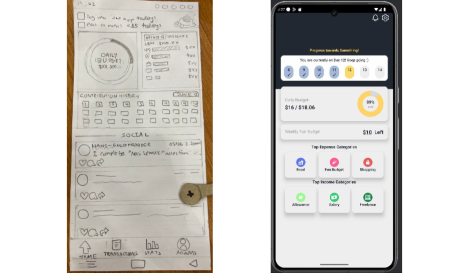
Homepage before to after
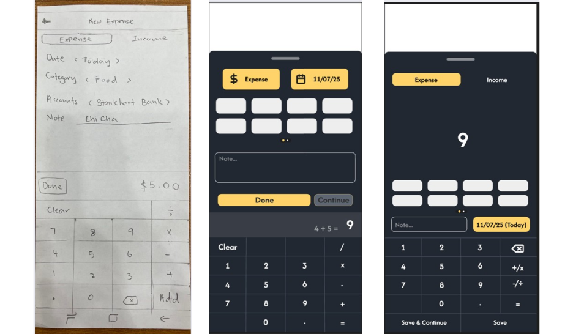
Iterations of Add expense page
- Removed social feature (too confusing and not enough time to implement)
- Renamed Splurge Meter → Fun Budget
- Made "Daily Budget" either tappable with breakdown or non-interactive with inline details
- Clarified "add expense" popup wordings and layout
Pivot over Restart
Weighed starting from scratch versus pivoting, and chose a focused pivot to maximise the remaining 2–3 month build window without sacrificing core UX quality.
Simplicity over Feature-Richness
Cut secondary gamification (streaks, badges) to prioritise a clean, low-friction entry flow for first-time users.
2 — Design Decisions
Flows were re-evaluated against first-week use. An online within-subject study with 20 students compared the Fun Budget as a toggle versus a standalone category.
- 3-screen navigation: simplified the core flow to Home, Transactions, and Statistics to eliminate menu nesting.
- Moved the floating "+" action button directly onto Home, where users most often need to log an expense.
- Decluttered dashboard: removed the redundant Add Income shortcut, since income is largely set-and-forget.
- Batch logging: added explicit "Save & Continue" vs. "Save" actions in the expense modal.
Locking "Fun Budget" as a standalone category prevented users from tagging regular spending (e.g., Food) as discretionary.
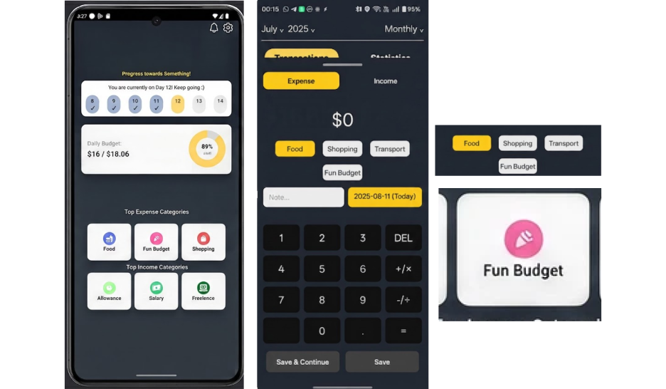
(Old) Fun budget as a category in homepage and log expense page
Toggle won the 20-student study. Users can now tag expenses across any category as Fun Budget, paired with a lively visual meter.
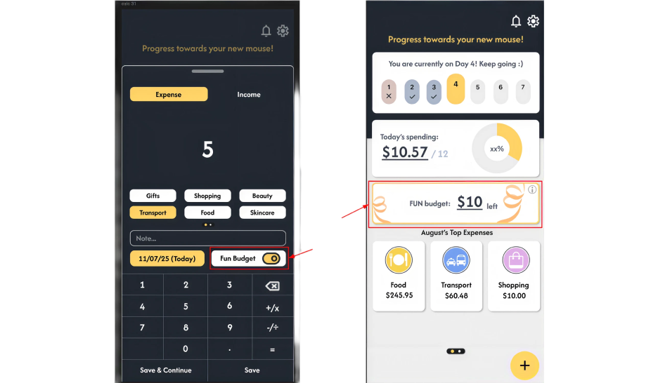
(New) Fun budget as a toggle in the log expense page
Tiny edit icons created tapping errors, and rows looked auto-logged without clear status.
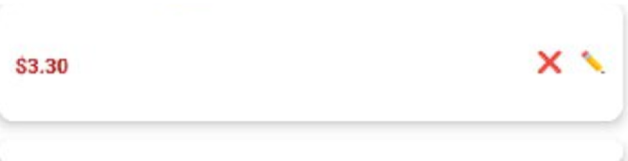
(Old) Tiny edit button
Made the entire row a tap target, grouped approvals by date, and added a "Pending" badge.
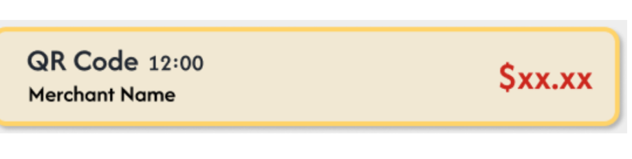
(New) Whole card clickable to edit
There was a need for a clearer end goal, and users mistook the 66-day habit builder as streaks.
The header of the progress bar was changed to "Working towards your goal: Day XX out of 66!" instead of "You are currently on XX days."
Users assumed a single-page app and didn't discover secondary screens via swiping alone.
Added subtle pager dots at the bottom of the screen.
3 — Engineering & Handoff
- React Native over React.js — QR-to-app receipt sharing required native OCR APIs.
- LLM-backed OCR via Firebase Cloud Functions parses QR receipt data and pre-fills the expense form.
- Shared gesture handling and layout tokens formatted consistently across iOS and Android.
- Biggest lesson: for the next project, set up a shared component library and design tokens from day one.
Key Outcomes
Shipped a functional MVP as a React Native app with live Firebase data and LLM-backed OCR receipt parsing.
3-screen navigation and the Fun Budget toggle were validated as intuitive across all usability tests.
QR-to-app sharing removed the need to manually re-type receipts from PayNow or PayLah.
The 66-day progress bar helped students focus on "working towards day XX" rather than days missed — reinforcing forward motivation over guilt.
Pivoting from gamification to frictionless habit formation reduced scope and sped up development on the highest-impact flows.